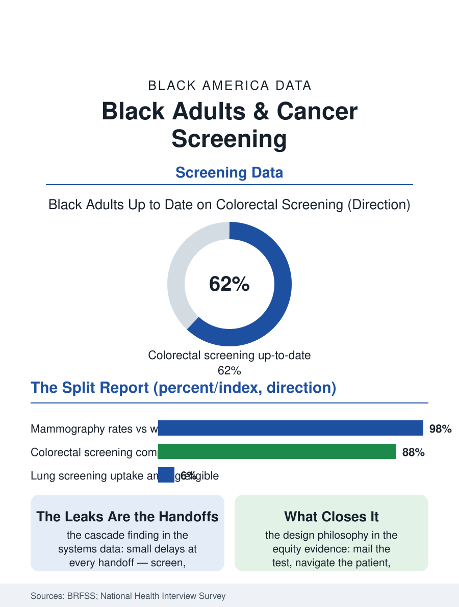

Black Public Health
The Split Report: Black Adults and Cancer Screening
Mammography near parity, colorectal lagging, lung screening barely begun, and delays at every handoff compounding into stage gaps. The screening file.

Cancer screening is where the health system's intentions meet its logistics, and the screening data give Black America a split report: mammography rates at or near parity in the recent surveys, colorectal screening climbing but lagging, lung screening barely begun among the eligible, and the follow-through from a positive screen to diagnosis and treatment leaking at every stage. This article reads the screening file.
The Rates Themselves
The Behavioral Risk Factor surveys and the National Health Interview Survey compose the report card. Breast screening's parity is the file's genuine success, built across a generation of targeted programs, the federal early detection program for low-income women, the community and church-based outreach of the health promotion files, and the mammography infrastructure's ubiquity, though the parity is in the initial screen, with the diagnostic follow-up after an abnormal result showing the delays the outcomes data record. Colorectal screening tells the access story in the other direction: the colonoscopy-centered American model prices and schedules the test at the system's convenience, preparation, sedation, a driver, a day off, and Black completion rates trail the white rate by a persistent margin that the stool-test alternatives, mailed and home-completed, have begun closing wherever systems deploy them, the mailed FIT programs in the large integrated systems posting the file's best equity results by designing around the barriers rather than exhorting the patients over them. Cervical screening's long success against the cancer's incidence continues, with the HPV vaccine era redrawing the file's future, and lung cancer screening, the low-dose CT for the heavy smoking histories of the tobacco file, stands as the file's open failure, eligibility criteria calibrated on smoking patterns that undercount Black risk, since Black smokers develop lung cancer at lower pack-year totals, and uptake among the eligible in the single digits across races, worst in the populations the cancer file shows dying most.
From Screen to Treatment: The Leaks
The screening cascade is the file's analytical core: screen, abnormal result, diagnostic resolution, treatment initiation, each transition a place where the Black patient's progress slows measurably in the systems data. The diagnostic interval after an abnormal mammogram stretches longer for Black women in the facility studies; the colonoscopy after a positive stool test waits longer; the biopsy scheduling and the oncology referral carry the same signature, small delays at every step compounding into the stage-at-diagnosis gaps the cancer file records as its first cause. The causes are the access file's usual entries with screening-specific additions: facilities' scheduling capacity in the neighborhoods where Black patients are screened, the navigation workforce, patient navigators being the intervention with the strongest equity evidence in the whole cascade literature, chronically grant-funded and first-cut; the insurance churn that strands a workup mid-cascade; and the result-notification failures, abnormal findings lost between systems, that the safety literature documents at rates no system defends. The integrated systems that own the whole cascade, the VA and the large prepaid plans, post the narrowest cascade gaps in the data, the file's recurring structural lesson that the disparity lives in the handoffs, and systems are judged by their handoffs.
Designing the Gap Closed
The screening file closes with the interventions the evidence supports, which share a design philosophy: mail the test, navigate the patient, own the cascade, measure the equity. The mailed stool test programs, the community health worker outreach of the barbershop and salon health files, the mobile mammography and lung screening units routed by the burden map rather than the market map, and the eligibility criteria reforms, risk-based rather than pack-year-based lung screening, that the oncology societies have begun adopting, together compose a closing agenda whose components are all demonstrated somewhere in the current data. The screening enterprise is the health system's most measurable promise, a set of numbers, rates, intervals, stages, that either converge by race or stand as the audited record of the failure to converge, published annually in the surveys. The file's final judgment honors the split report for what it teaches: parity is achievable, mammography proved it, and every remaining gap is therefore a choice the system continues to make, in scheduling templates and navigation budgets and criteria committees, against the evidence of its own best programs. The screens themselves work. The file is about everything around them.
More in Black Public Health
Hypertension Among Black Adults: Prevalence, Control, and Consequences
About 55 percent of Black adults have hypertension — the highest rate of any U.S. group. Prevalence, onset, control, and the stroke, heart, and kidney consequences in the data.
Diabetes Among Black Adults: Prevalence and Complications
Nearly one in five Black adults has diabetes, diagnosed or undiagnosed — and its complications fall with particular weight. The CDC data on prevalence, control, and outcomes.
Black Life Expectancy: The Gap at Birth and Its Causes
Black life expectancy at birth is about 73 years, roughly five years below the national figure — the summary measure of every health gap in this section. The CDC data.
Source: Behavioral Risk Factor Surveillance System; National Health Interview Survey; cancer screening cascade and navigation literature.